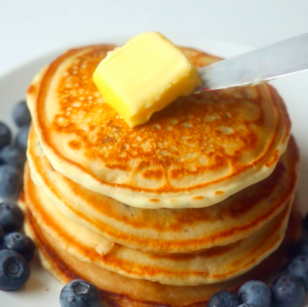

Pancakes Recipe

Pancakes are a delicious and popular breakfast dish enjoyed by people
all over the world. They are a type of flat, round, and typically thin cake
made from a simple batter that consists of basic ingredients
like flour, eggs, milk, and a leavening agent such as baking powder.
This mixture is whisked together to create a smooth and slightly
thick consistency.
Ingredients
- All-Purpose Flour
- Eggs
- Milk
- Baking Powder
- Salt
- Sugar
- Butter or Oil
- Vanilla Extract (optional)
Steps
- In a bowl, combine flour, sugar, baking powder, and salt.
- In another bowl, whisk together milk, egg, melted butter or oil.
- Pour the wet mixture into the dry mixture and stir until just combined. Don't overmix; it's okay if there are lumps.
- Preheat a greased pan over medium-high heat.
- Pour batter onto the pan to form pancakes.
- Cook until bubbles form on the surface, then flip and cook until golden brown on both sides.
- Serve with your favorite toppings.